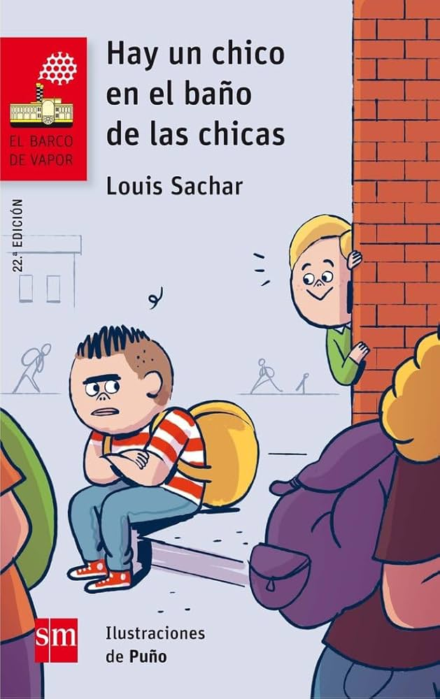

Lecturas
Mi Experiencia con las Lecturas
El trabajo de las lecturas me ha resultado interesante y muy rico en reflexiones acerca de la inclusión en la educación y la buena educación en general.
Me han hecho aprender mucho y leer acerca de diferentes situaciones, siendo yo una persona que detestaba leer desde bien pequeña.
He elegido estos libros prejuzgando un poco por sus nombres, consideraba que tenían algo que me llamaba la atención y efectivamente, han conseguido conquistarme y engancharme a ellos de forma que los he disfrutado muchísimo.
La lectura es una herramienta fundamental para comprender la diversidad y la inclusión en la educación. A través de estas obras, he podido explorar diferentes perspectivas y profundizar en mi comprensión de la educación inclusiva.
Lecturas 1º Cuatrimestre
Explora mis reflexiones sobre las lecturas realizadas durante el primer cuatrimestre, donde descubrí nuevas perspectivas sobre la educación inclusiva.
Lecturas 2º Cuatrimestre
Descubre mis análisis y aprendizajes de las lecturas del segundo cuatrimestre, incluyendo "Hay un chico en el baño de las chicas" y otras obras significativas.